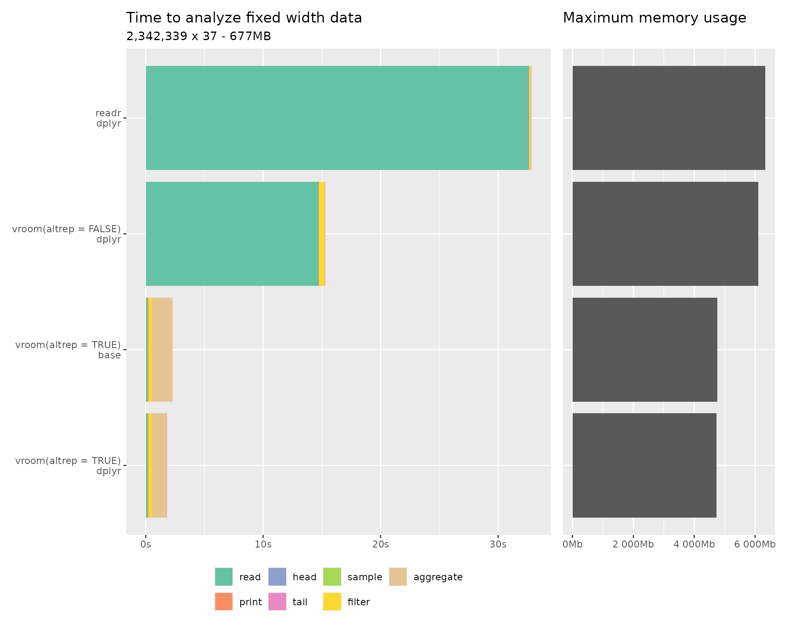

vroom is a new approach to reading delimited and fixed width data into R.
It stems from the observation that when parsing files reading data from disk and finding the delimiters is generally not the main bottle neck. Instead (re)-allocating memory and parsing the values into R data types (particularly for characters) takes the bulk of the time.
Therefore you can obtain very rapid input by first performing a fast indexing step and then using the Altrep framework to access the values in a lazy / delayed fashion.
How it works
The initial reading of the file simply records the locations of each individual record, the actual values are not read into R. Altrep vectors are created for each column in the data which hold a pointer to the index and the memory mapped file. When these vectors are indexed the value is read from the memory mapping.
This means initial reading is extremely fast, in the real world
dataset below it is ~ 1/4 the time of the multi-threaded
data.table::fread(). Sampling operations are likewise
extremely fast, as only the data actually included in the sample is
read. This means things like the tibble print method, calling
head(), tail() x[sample(), ] etc.
have very low overhead. Filtering also can be fast, only the columns
included in the filter selection have to be fully read and only the data
in the filtered rows needs to be read from the remaining columns.
Grouped aggregations likewise only need to read the grouping variables
and the variables aggregated.
Once a particular vector is fully materialized the speed for all subsequent operations should be identical to a normal R vector.
This approach potentially also allows you to work with data that is larger than memory. As long as you are careful to avoid materializing the entire dataset at once it can be efficiently queried and subset.
Reading delimited files
The following benchmarks all measure reading delimited files of various sizes and data types. Because vroom delays reading the benchmarks also do some manipulation of the data afterwards to try and provide a more realistic performance comparison.
Because the read.delim results are so much slower than
the others they are excluded from the plots, but are retained in the
tables.
Taxi Trip Dataset
This real world dataset is from Freedom of Information Law (FOIL) Taxi Trip Data from the NYC Taxi and Limousine Commission 2013, originally posted at https://chriswhong.com/open-data/foil_nyc_taxi/. It is also hosted on archive.org.
The first table trip_fare_1.csv is 1.55G in size.
#> Observations: 14,776,615
#> Variables: 11
#> $ medallion <chr> "89D227B655E5C82AECF13C3F540D4CF4", "0BD7C8F5B...
#> $ hack_license <chr> "BA96DE419E711691B9445D6A6307C170", "9FD8F69F0...
#> $ vendor_id <chr> "CMT", "CMT", "CMT", "CMT", "CMT", "CMT", "CMT...
#> $ pickup_datetime <chr> "2013-01-01 15:11:48", "2013-01-06 00:18:35", ...
#> $ payment_type <chr> "CSH", "CSH", "CSH", "CSH", "CSH", "CSH", "CSH...
#> $ fare_amount <dbl> 6.5, 6.0, 5.5, 5.0, 9.5, 9.5, 6.0, 34.0, 5.5, ...
#> $ surcharge <dbl> 0.0, 0.5, 1.0, 0.5, 0.5, 0.0, 0.0, 0.0, 1.0, 0...
#> $ mta_tax <dbl> 0.5, 0.5, 0.5, 0.5, 0.5, 0.5, 0.5, 0.5, 0.5, 0...
#> $ tip_amount <int> 0, 0, 0, 0, 0, 0, 0, 0, 0, 0, 0, 0, 0, 0, 0, 0...
#> $ tolls_amount <dbl> 0.0, 0.0, 0.0, 0.0, 0.0, 0.0, 0.0, 4.8, 0.0, 0...
#> $ total_amount <dbl> 7.0, 7.0, 7.0, 6.0, 10.5, 10.0, 6.5, 39.3, 7.0...Taxi Benchmarks
code: bench/taxi
All benchmarks were run on a Amazon EC2 m5.4xlarge instance with 16 vCPUs and an EBS volume type.
The benchmarks labeled vroom_base uses
vroom with base functions for manipulation.
vroom_dplyr uses vroom to read the file and
dplyr functions to manipulate. data.table uses
fread() to read the file and data.table
functions to manipulate and readr uses readr
to read the file and dplyr to manipulate. By default vroom
only uses Altrep for character vectors, these are labeled
vroom(altrep: normal). The benchmarks labeled
vroom(altrep: full) instead use Altrep vectors for all
supported types and vroom(altrep: none) disable Altrep
entirely.
The following operations are performed.
- The data is read
-
print()- N.B. read.delim usesprint(head(x, 10))because printing the whole dataset takes > 10 minutes head()tail()- Sampling 100 random rows
- Filtering for “UNK” payment, this is 6434 rows (0.0435% of total).
- Aggregation of mean fare amount per payment type.
| reading package | manipulating package | altrep | memory | read | head | tail | sample | filter | aggregate | total | |
|---|---|---|---|---|---|---|---|---|---|---|---|
| read.delim | base | 6.18GB | 1m 12.3s | 6ms | 1ms | 1ms | 1ms | 1.3s | 895ms | 1m 14.5s | |
| readr | dplyr | 6.91GB | 37.3s | 147ms | 2ms | 1ms | 17ms | 249ms | 538ms | 38.3s | |
| vroom | dplyr | FALSE | 6.55GB | 18.4s | 117ms | 2ms | 1ms | 14ms | 961ms | 1.2s | 20.7s |
| vroom | base | TRUE | 6.35GB | 1.4s | 158ms | 3ms | 1ms | 1ms | 1.1s | 7.4s | 10s |
| data.table | data.table | 6.38GB | 5.8s | 12ms | 1ms | 1ms | 1ms | 104ms | 764ms | 6.7s | |
| vroom | dplyr | TRUE | 6.41GB | 1.3s | 76ms | 2ms | 1ms | 11ms | 1.3s | 4s | 6.7s |
(N.B. Rcpp used in the dplyr implementation fully materializes
all the Altrep numeric vectors when using filter() or
sample_n(), which is why the first of these cases have
additional overhead when using full Altrep.).
All numeric data
All numeric data is really a worst case scenario for vroom. The index takes about as much memory as the parsed data. Also because parsing doubles can be done quickly in parallel and text representations of doubles are only ~25 characters at most there isn’t a great deal of savings for delayed parsing.
For these reasons (and because the data.table implementation is very fast) vroom is a bit slower than fread for pure numeric data.
However because vroom is multi-threaded it is a bit quicker than readr and read.delim for this type of data.
Long
code: bench/all_numeric-long

| reading package | manipulating package | altrep | memory | read | head | tail | sample | filter | aggregate | total | |
|---|---|---|---|---|---|---|---|---|---|---|---|
| read.delim | base | 4.79GB | 1m 51.4s | 1.4s | 1ms | 1ms | 2ms | 4.5s | 37ms | 1m 57.3s | |
| readr | dplyr | 2.82GB | 13.1s | 64ms | 2ms | 1ms | 16ms | 18ms | 55ms | 13.3s | |
| vroom | dplyr | FALSE | 2.75GB | 1.3s | 48ms | 1ms | 1ms | 14ms | 18ms | 46ms | 1.5s |
| vroom | base | FALSE | 2.69GB | 1.3s | 48ms | 1ms | 1ms | 3ms | 6ms | 55ms | 1.4s |
| vroom | dplyr | TRUE | 3.29GB | 604ms | 64ms | 1ms | 1ms | 14ms | 42ms | 235ms | 959ms |
| vroom | base | TRUE | 3.28GB | 581ms | 55ms | 1ms | 1ms | 3ms | 29ms | 251ms | 920ms |
| data.table | data.table | 2.72GB | 256ms | 13ms | 1ms | 1ms | 4ms | 6ms | 25ms | 302ms |
Wide
code: bench/all_numeric-wide

| reading package | manipulating package | altrep | memory | read | head | tail | sample | filter | aggregate | total | |
|---|---|---|---|---|---|---|---|---|---|---|---|
| read.delim | base | 14.41GB | 8m 41s | 131ms | 7ms | 7ms | 9ms | 75ms | 5ms | 8m 41.2s | |
| readr | dplyr | 5.46GB | 56.1s | 96ms | 3ms | 3ms | 26ms | 18ms | 39ms | 56.3s | |
| vroom | dplyr | FALSE | 5.35GB | 6.9s | 63ms | 3ms | 3ms | 95ms | 14ms | 31ms | 7.1s |
| vroom | base | FALSE | 5.34GB | 6.9s | 61ms | 3ms | 3ms | 5ms | 6ms | 7ms | 7s |
| vroom | dplyr | TRUE | 7.26GB | 3s | 68ms | 4ms | 14ms | 23ms | 20ms | 77ms | 3.2s |
| vroom | base | TRUE | 7.26GB | 3s | 68ms | 4ms | 4ms | 5ms | 11ms | 42ms | 3.1s |
| data.table | data.table | 5.48GB | 1.3s | 100ms | 1ms | 1ms | 3ms | 4ms | 4ms | 1.4s |
All character data
code: bench/all_character-long
All character data is a best case scenario for vroom when using Altrep, as it takes full advantage of the lazy reading.
Long

| reading package | manipulating package | altrep | memory | read | head | tail | sample | filter | aggregate | total | |
|---|---|---|---|---|---|---|---|---|---|---|---|
| read.delim | base | 4.53GB | 1m 43.1s | 8ms | 1ms | 1ms | 2ms | 28ms | 293ms | 1m 43.4s | |
| readr | dplyr | 4.35GB | 1m 2.6s | 102ms | 2ms | 1ms | 17ms | 20ms | 215ms | 1m 2.9s | |
| vroom | dplyr | FALSE | 4.3GB | 50.5s | 50ms | 2ms | 1ms | 16ms | 21ms | 150ms | 50.7s |
| data.table | data.table | 4.73GB | 42.8s | 16ms | 1ms | 1ms | 4ms | 16ms | 149ms | 43s | |
| vroom | base | TRUE | 3.22GB | 595ms | 46ms | 1ms | 1ms | 3ms | 163ms | 2.1s | 2.9s |
| vroom | dplyr | TRUE | 3.21GB | 640ms | 58ms | 2ms | 1ms | 16ms | 185ms | 1.2s | 2.1s |
Wide
code: bench/all_character-wide

| reading package | manipulating package | altrep | memory | read | head | tail | sample | filter | aggregate | total | |
|---|---|---|---|---|---|---|---|---|---|---|---|
| read.delim | base | 13.09GB | 8m 30.4s | 149ms | 7ms | 8ms | 26ms | 224ms | 59ms | 8m 30.9s | |
| readr | dplyr | 12.21GB | 7m 39.4s | 217ms | 4ms | 3ms | 29ms | 38ms | 57ms | 7m 39.8s | |
| vroom | dplyr | FALSE | 12.14GB | 4m 7.3s | 67ms | 3ms | 3ms | 28ms | 35ms | 37ms | 4m 7.5s |
| data.table | data.table | 12.66GB | 3m 21.8s | 135ms | 2ms | 2ms | 33ms | 168ms | 15ms | 3m 22.1s | |
| vroom | base | TRUE | 6.57GB | 3.1s | 62ms | 5ms | 4ms | 5ms | 55ms | 252ms | 3.5s |
| vroom | dplyr | TRUE | 6.57GB | 3.1s | 64ms | 5ms | 4ms | 27ms | 82ms | 160ms | 3.4s |
Reading multiple delimited files
code: bench/taxi_multiple
The benchmark reads all 12 files in the taxi trip fare data, totaling 173,179,759 rows and 11 columns for a total file size of 18.4G.

| reading package | manipulating package | altrep | memory | read | head | tail | sample | filter | aggregate | total | |
|---|---|---|---|---|---|---|---|---|---|---|---|
| readr | dplyr | 63.5GB | 7m 55s | 837ms | 1ms | 1ms | 15ms | 4.2s | 13.5s | 8m 13.6s | |
| vroom | dplyr | FALSE | 63.1GB | 3m 52.3s | 2.2s | 2ms | 1ms | 14ms | 10.5s | 7.2s | 4m 12.2s |
| vroom | base | TRUE | 88.3GB | 20.3s | 3s | 1ms | 1ms | 1ms | 21.5s | 2m 22.6s | 3m 7.5s |
| vroom | dplyr | TRUE | 88GB | 20.4s | 2.8s | 1ms | 1ms | 13ms | 23.9s | 1m 5.6s | 1m 52.7s |
| data.table | data.table | 59.6GB | 1m 35.3s | 7ms | 1ms | 1ms | 1ms | 1.1s | 4.7s | 1m 41.1s |
Reading fixed width files
United States Census 5-Percent Public Use Microdata Sample files
This fixed width dataset contains individual records of the characteristics of a 5 percent sample of people and housing units from the year 2000 and is freely available at https://web.archive.org/web/20150908055439/https://www2.census.gov/census_2000/datasets/PUMS/FivePercent/California/all_California.zip. The data is split into files by state, and the state of California was used in this benchmark.
The data totals 2,342,339 rows and 37 columns with a total file size of 677M.
Census data benchmarks
code: bench/fwf
| reading package | manipulating package | altrep | memory | read | head | tail | sample | filter | aggregate | total | |
|---|---|---|---|---|---|---|---|---|---|---|---|
| read.delim | base | 6.17GB | 18m 9.6s | 16ms | 1ms | 2ms | 3ms | 492ms | 90ms | 18m 10.2s | |
| readr | dplyr | 6.19GB | 32.6s | 48ms | 2ms | 1ms | 17ms | 95ms | 94ms | 32.8s | |
| vroom | dplyr | FALSE | 5.96GB | 14.7s | 44ms | 1ms | 1ms | 15ms | 468ms | 91ms | 15.3s |
| vroom | base | TRUE | 4.65GB | 164ms | 56ms | 1ms | 1ms | 7ms | 285ms | 1.8s | 2.3s |
| vroom | dplyr | TRUE | 4.62GB | 163ms | 48ms | 2ms | 1ms | 16ms | 306ms | 1.3s | 1.8s |
Writing delimited files
code: bench/taxi_writing
The benchmarks write out the taxi trip dataset in a few different ways.
- An uncompressed file
- A gzip compressed file using
gzfile()(readr and vroom do this automatically for files ending in.gz) - A gzip compressed file compressed with multiple threads (natively
for data.table and using a
pipe()connection to pigz for the rest). - A Zstandard compressed file (data.table does not support this format).

| compression | base | data.table | readr | vroom |
|---|---|---|---|---|
| gzip | 3m 17.1s | 1m 7.8s | 2m 0.2s | 1m 14.4s |
| multithreaded_gzip | 1m 37.8s | 8.9s | 53.4s | 8.1s |
| zstandard | 1m 39.9s | NA | 54.2s | 12.4s |
| uncompressed | 1m 37.4s | 1.5s | 52.2s | 1.7s |